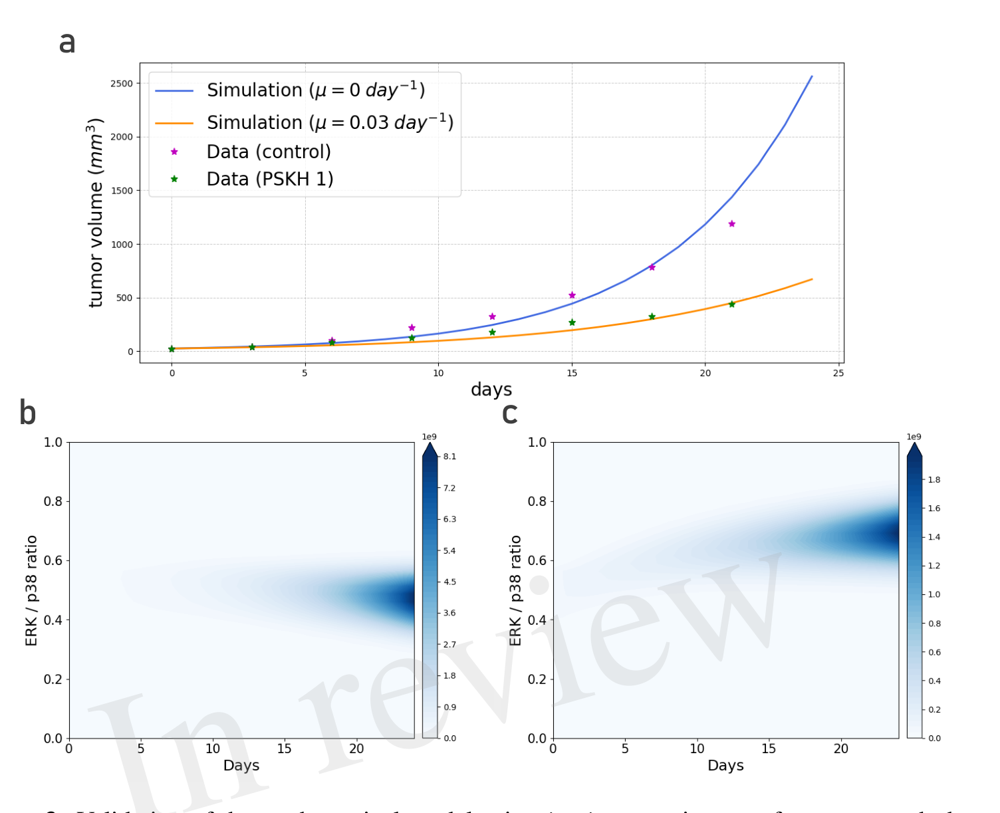
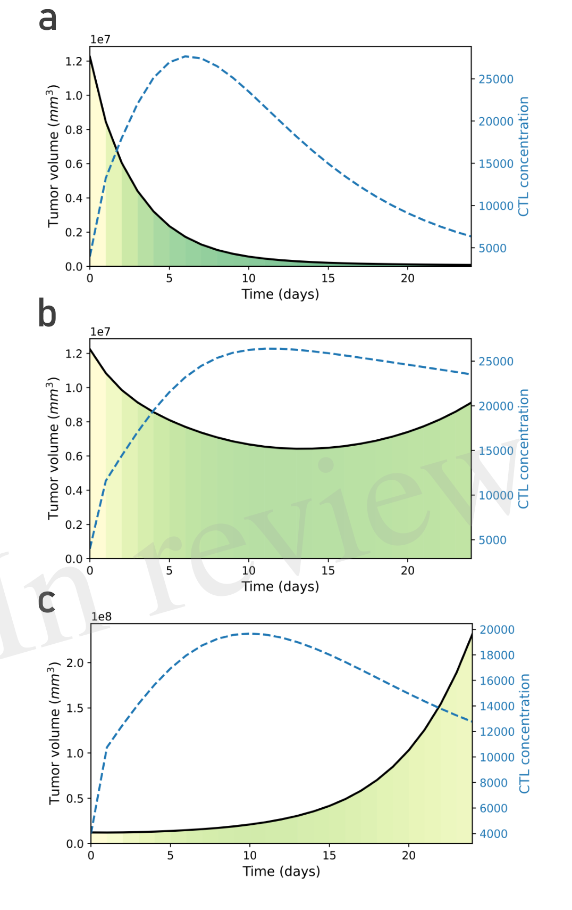

Author-selected panels from the open-access research article.
ERK/p38-regulated dormancy links cellular state to tumor–immune outcomes
In a study with my collaborators, we represented tumor cells along a continuous ERK/p38-regulated phenotype axis rather than as two fixed dormant and proliferating states. The model connects cellular heterogeneity to tumor growth, epidermal growth factor, and cytotoxic immune responses.
Comparison with published p38-inhibition experiments connected changes in dormancy regulation to growth trajectories. The same framework showed how immune pressure and phenotype transitions can produce elimination, equilibrium, escape, or dormant-escape dynamics without changing the model into separate disease-specific cases.
Together, these results identify the distribution of tumor states—rather than tumor size alone—as an important determinant of immune surveillance and subsequent growth. These are mechanistic predictions that motivate further experimental study.
Baffoe & Bouchnita · Frontiers in Immunology · 2026 ↗